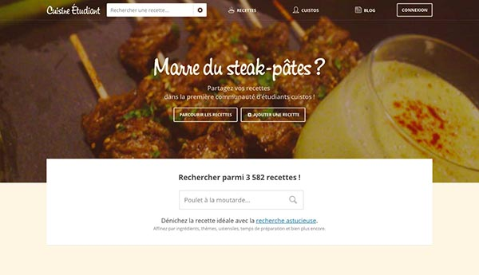
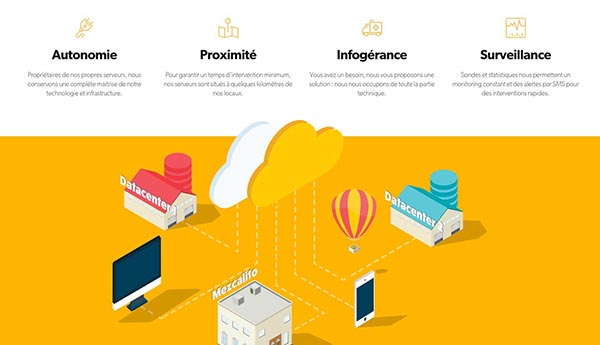
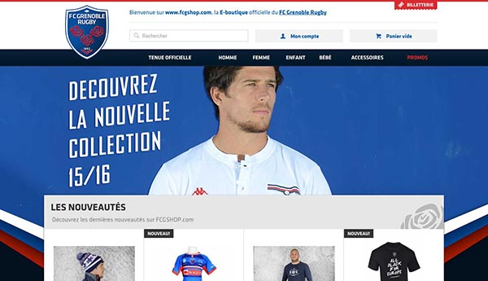
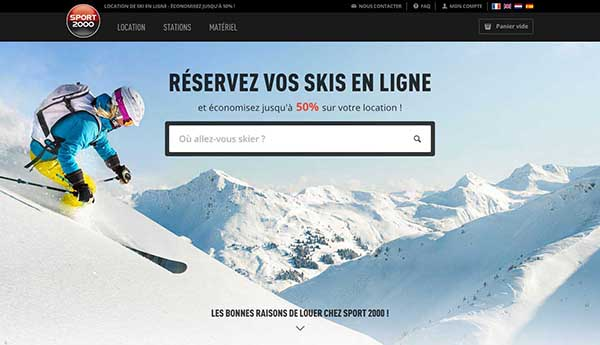

@NicooPrat
Front-end developer &designer
Hello
Je m’appelle Nico Prat et suis animateur radio sur Le Mouv’ designer & développeur front-end à Lyon.
Je conçois et donne vie à l’interface d’applications et sites internet. Je suis passionné par l’expérience utilisateur, l’intéraction homme-machine, le webdesign et le code : en gros, le web !
J’ai été webdesigner pendant 5 ans à Mezcalito, agence web Grenobloise, où j’ai pu travailler avec des clients tels que Sport 2000, Go Sport, Twinner, Intersport, Sataski, Serre Chevalier, et bien d’autres.
En parallèle j’ai aussi co-créé Cuisine Étudiant dont je me suis occupé du graphisme et du front-end pendant 6 ans (aujourd’hui propriété de Mooveo).
De retour à Lyon, je travaille maintenant sur Globetrotter, une plateforme de rédaction et de partage de carnets de voyage en ligne.
Dernières réalisations
-  Cuisine Étudiant Cofondateur du site. Je me suis occupé de designer, intégrer et développer la partie front-end du site pendant 6 ans. http://www.cuisine-etudiant.fr/
-  Mezcalito Co-création du nouveau site de l'agence. Utilisation d'effets, d'animations SVG, de jeux de scrolling, etc. http://www.mezcalito.fr/
-  FCG Shop Design, intégration et développement du nouveau site e-commerce de l'équipe de rugby de Grenoble. http://fcgshop.com/
-  Sport 2000 Moteur de location de ski en ligne. Design et intégration pour ce large projet responsive et multilingue. http://location-ski.sport2000.fr/
- 1991 Hello world Quelle banalité... Mais il faut bien commencer quelque part !
- 2007 Bac ES Mention bien, option sciences sociales et politiques, si ça vous intéresse. Et oui, on peut coder sans Bac S !
- 2007 → 2009 DUT SRC Services et Réseaux de Communication (maintenant appelé MMI, Métiers du Multimédia et de l'Internet) à l'Isle d'Abeau. Entre Lyon et Grenoble, tu sais. Mais si, y'a un péage pas loin ! Non ? Bon, c'est paumé quoi.
- 2008 → 2015 Cuisine Étudiant Plateforme de partage de recettes simples, rapides et économiques entre étudiants. Site créé entre amis, fait, défait et refait plusieurs fois de A à Z, puis revendu fin 2015.
- 2009 → 2010 Licence Pro SMIN Services Mobiles et Interfaces Nomade (traduisez par web et applications mobiles), en alternance chez Mezcalito.
- 2010 → 2015 Mezcalito Webdesigner pendant 5 ans chez Mezcalito, chouette agence web dans le centre de Grenoble. Mes missions : brief client, réflexion, création de maquettes, intégration, utilisation de CMS (Wordpress, Prestashop), organisateur officiel de LAN party, etc.
- 2016 Globetrotter Nouveau projet personnel en cours de réflexion/création : communauté de voyageurs partageant leurs périples sous forme de carnet de bord intéractif en ligne, développé avec la plateforme Meteor.